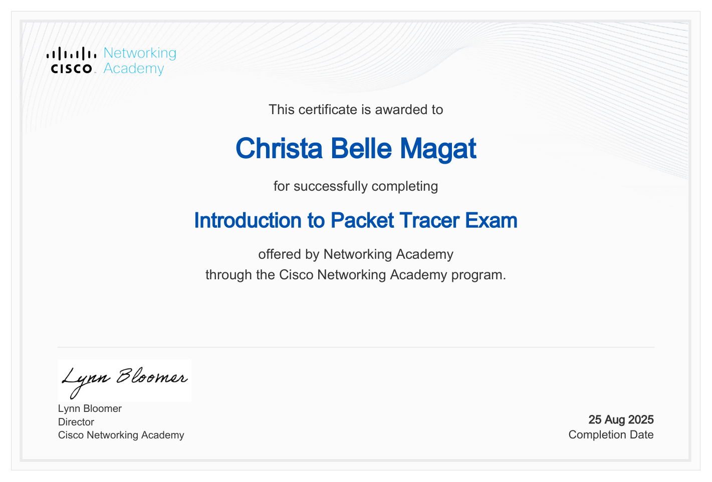
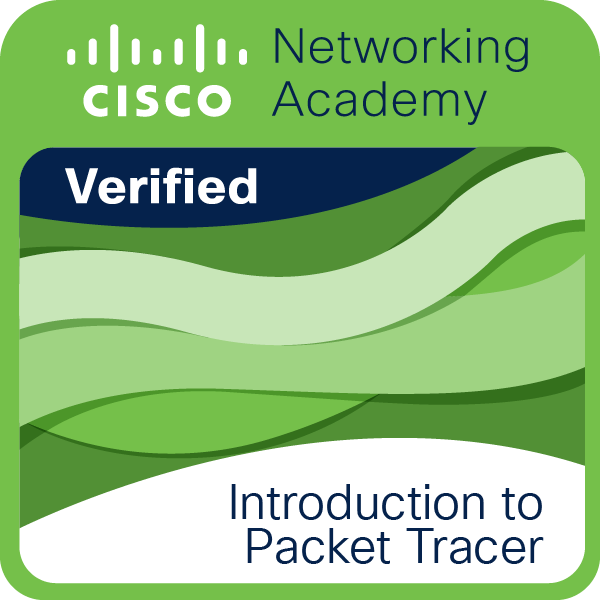

Certificates and badges
Mostly Cisco Networking Academy certificates and badges, collected while studying networking and IT.
Certificates
Introduction to Packet Tracer Exam

Badges
Introduction to Packet Tracer

Mostly Cisco Networking Academy certificates and badges, collected while studying networking and IT.

